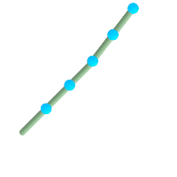

名前
ST_LineInterpolatePoints — 線に沿った内挿点を一つ以上返します。
概要
geometry ST_LineInterpolatePoints(geometry a_linestring, float8 a_fraction, boolean repeat);
説明
線に沿った内挿点を一つ以上返します。第1引数は LINESTRINGでなければなりません。第2引数はfloat8で0から1の区間で、そのポイントが位置するラインストリングの総延長に対する割合です。第3引数がFALSEの場合には、たかだか一つのポイントが構築されます (これは ST_LineInterpolatePointと同じです)。
結果にポイントが無いかポイントが一つだけの場合には、一つのPOINTを返します。二つ以上のポイントがある場合には、MULTIPOINTを返します。
Availability: 2.5.0
 This function supports 3d and will not drop the z-index.
This function supports 3d and will not drop the z-index.
This function supports M coordinates.
例

20% (0.20)位置ごとの内挿点を持ったラインストリング
-- 2次元ラインに沿った20%ごとのポイントを返します。
SELECT ST_AsText(ST_LineInterpolatePoints('LINESTRING(25 50, 100 125, 150 190)', 0.20))
st_astext
----------------
MULTIPOINT(51.5974135047432 76.5974135047432,78.1948270094864 103.194827009486,104.132163186446 130.37181214238,127.066081593223 160.18590607119,150 190)